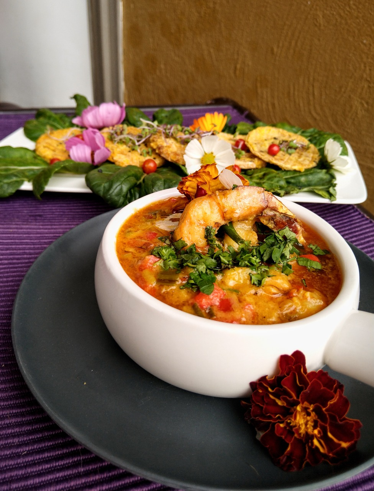
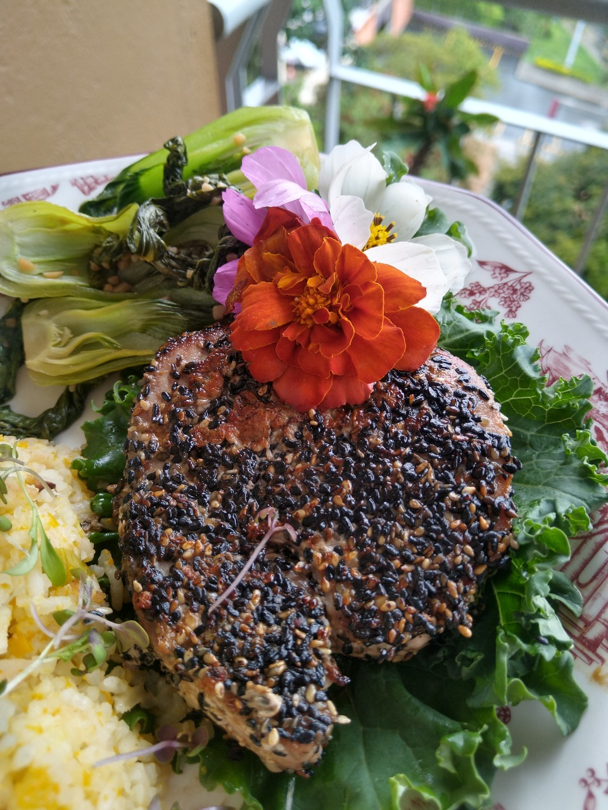
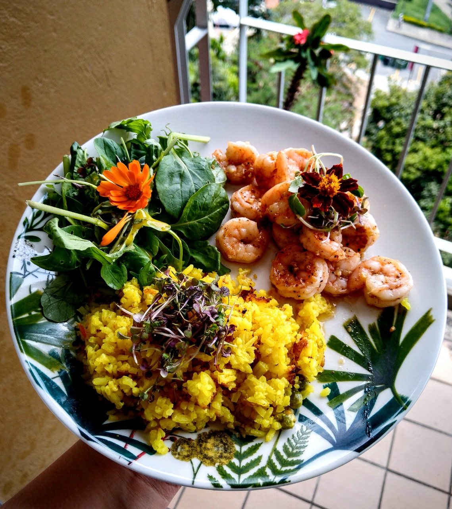
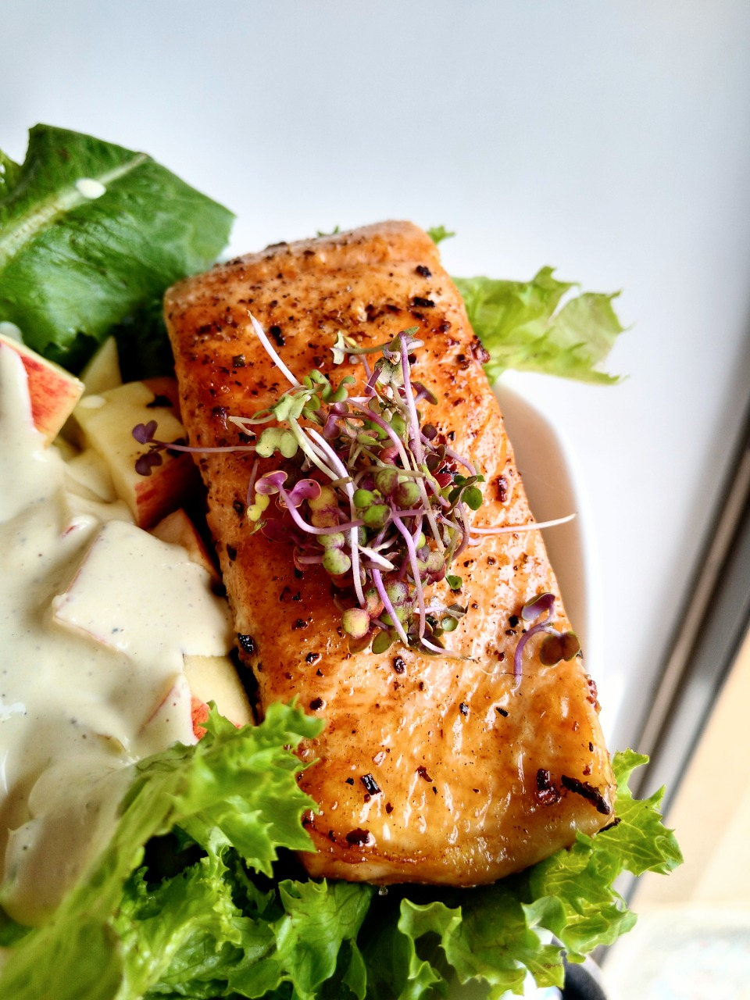

Langostinos Encocados

Receta preparada a base de una crema de coco con pimenton rojo, achiote y leche de coco recien licuado. Esta receta fue preparada para el concurso organizado por Portum Pesquera en el 2020.
Atun Sellado con Costra de Ajonjoli

Esta receta requiere que el filete, sacado del lomo del atun de carne roja, quede a termino medio-azul.
Tiene un estilo mas asiatico por los ingredientes como jengibre y aciete de semámo para conseguir que el sabor resalte y un la carne permanezca jugosa.
Camarones al Ajillo

Esta preparacion clásica y sencilla permite resaltar la crocancia y la frescura de los camarones y el sabor marcado que tiene el ajo y la mantequilla.
Pese a ser una receta bastante sencilla, siempre destacará por su elegancia. Es perfecta para las pastas.
Salmon Asado en Sarten de hierro esmaltado

Esta preparacion es bastante sencilla, se debe respetar que la carne del salmon no pase de una coccion superior al término tres cuarto para conservar la jugosiad en su histerior.
Como el salmón tiene un sabor tan marcado, queda perfecto para ser resaltado tanto con verduras asadas como, en este caso, con una ensalda ceasar basada en yogurt griedo y no es mayonesa.